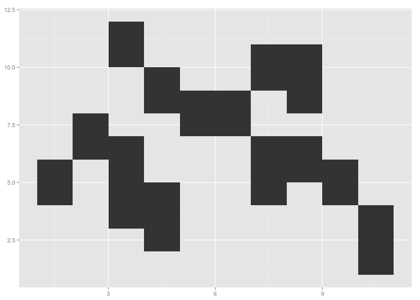

<!-- html table generated in R 3.1.2 by xtable 1.7-4 package -->
<!-- Mon Mar  9 17:58:21 2015 -->
<table border=1>
  <tr> <td> ggplot2 </td> <td> toby-rect </td> <td> master </td> </tr>
  <tr> <td>  </td> <td> could not download .png <a href="../../data/214c3769113f894ff74b40088230752f5a287342/rects-black.log">log</a> </td> <td> ggplotly error </td> </tr>
   </table>
